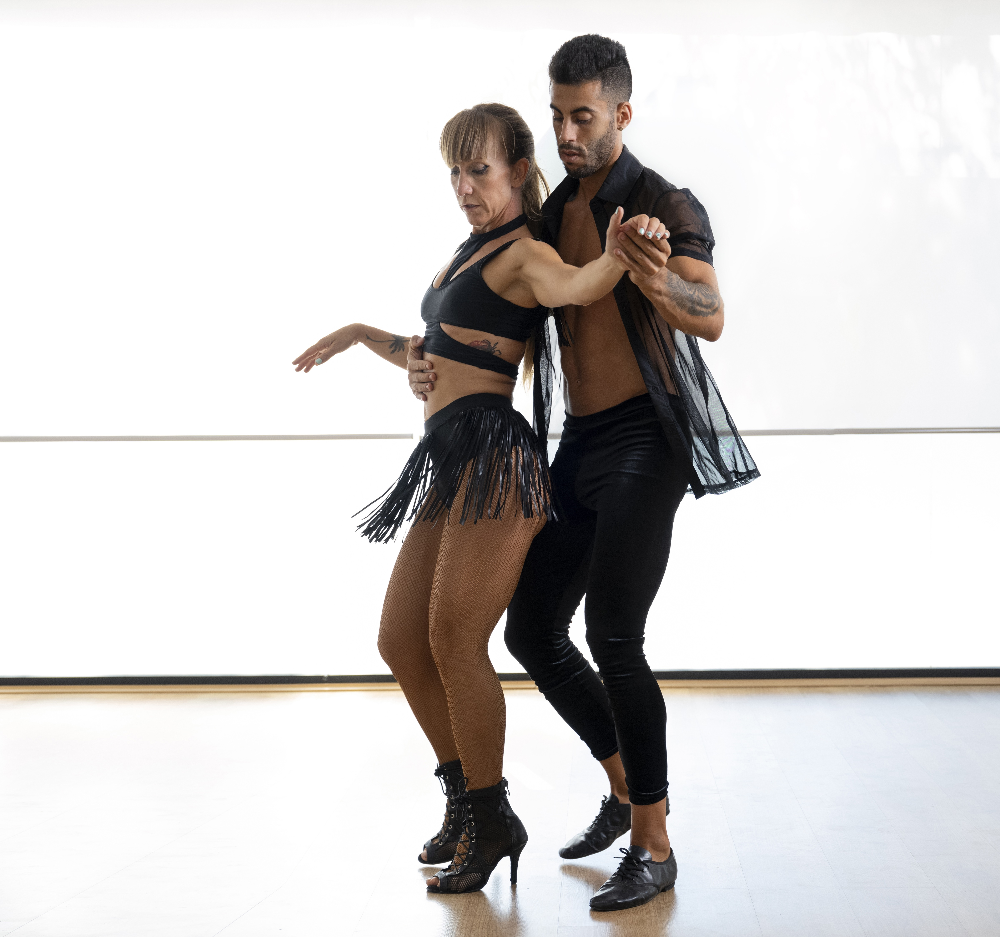

Step into a world of sizzling salsa, fiery flamenco, and captivating bachata! Ever dreamed of gliding across the dance floor with the confidence and grace of a Latin dancer? Now you can, wherever you are in the world, with Dance Mastery Online, your premier online Latin dance school! We offer a vibrant community and passionate instructors dedicated to helping you discover the joy and energy of Latin dance.

No partner? No problem! Our beginner-friendly classes cater to solo dancers, guiding you step-by-step through the fundamentals of Salsa, Bachata, Merengue, Cha Cha Cha, and more. Learn basic footwork, body movements, and partner techniques (even without a partner!) at your own pace, in the comfort of your own home.